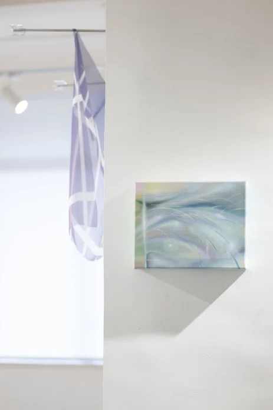
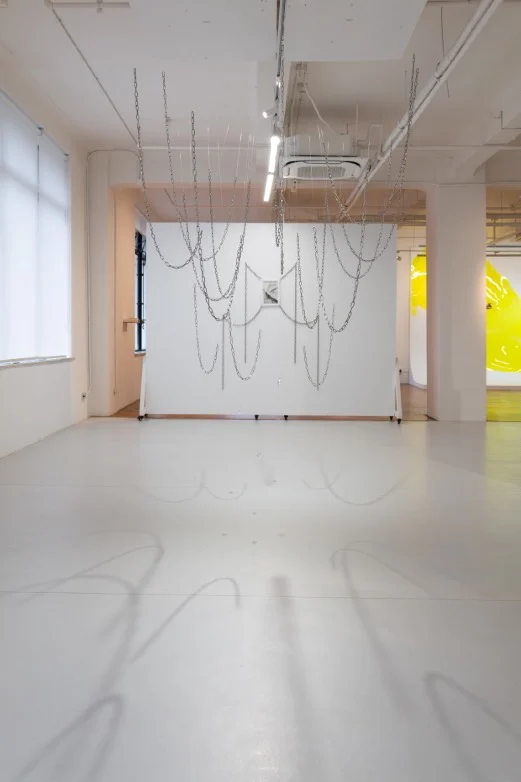

Exhibitions / 2024Spiritual Presence
Light Across Traces
越过痕迹的光

The story
A reflection on resilience, transformation and the light that remains.
Curated by Xu Wenjie, this exhibition brings together five artists exploring women's inner strength and spiritual lives. Working from distinct perspectives, they trace how experiences of fragmentation can become new forms of growth, expression and self-understanding.
- Artists & collaborators
- Huang Zhejun · Huang Peishan · Yue Lingjun · Ren Ruoxi · Li Yingying
- From the archive
- The Parrot 2026 · pp. 13, 29, 30, 31, 32

